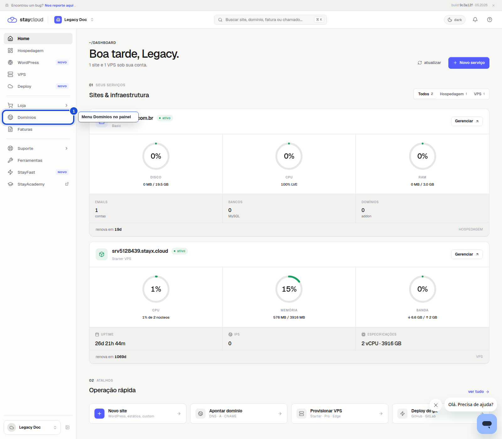
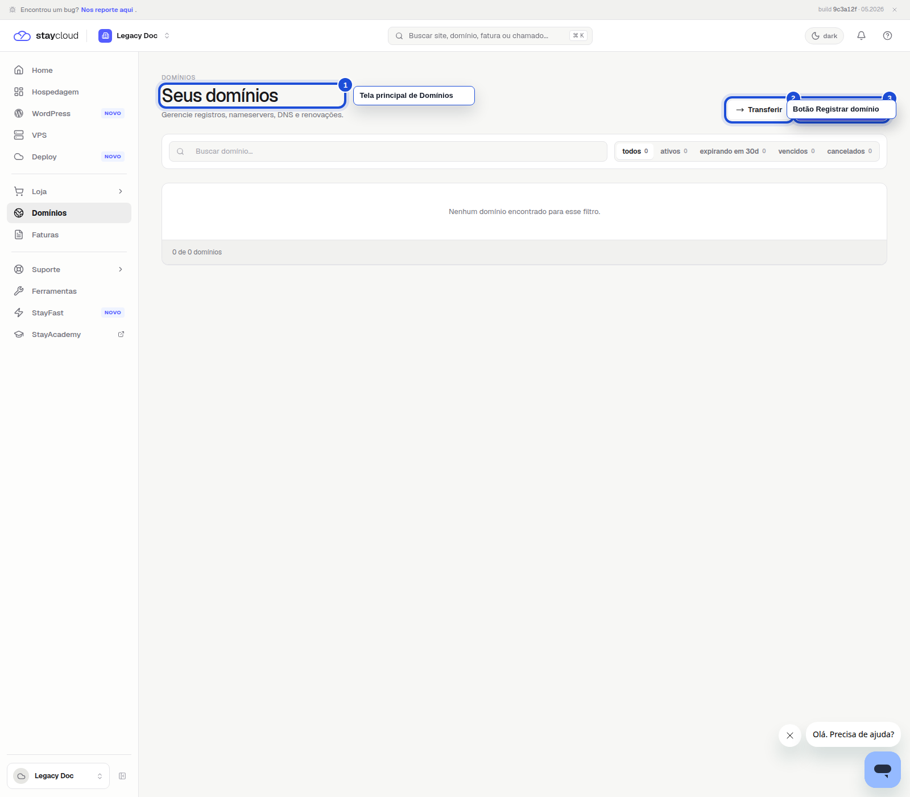
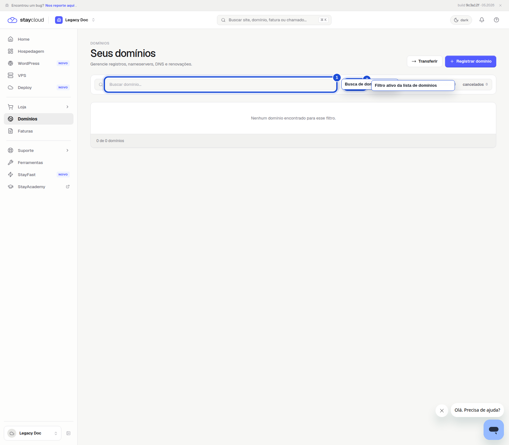

1Abra o Painel Novo
Depois do login, você vê o menu lateral e a área principal da conta.

Veja onde encontrar a area de Domínios, conferir os domínios da conta e acessar os recursos de busca, transferência e registro.
Use este passo a passo quando quiser abrir a área de Domínios, conferir informações da conta ou localizar a busca de domínios.
Depois do login, você vê o menu lateral e a área principal da conta.

Ao clicar em Domínios, a página abre com o título Seus domínios.

Na parte superior da área de Domínios, você encontra a busca e os filtros para localizar o que precisa com mais facilidade.

Se a opção não aparecer, use a área de suporte do Painel Novo para pedir ajuda.